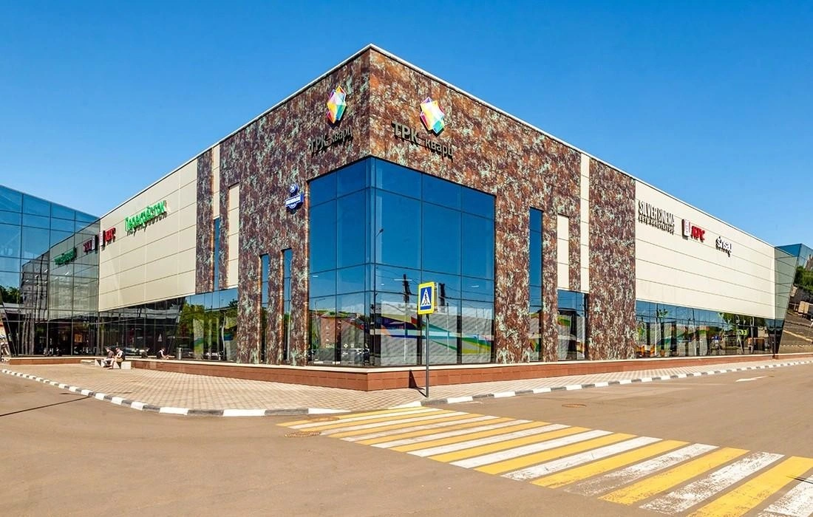
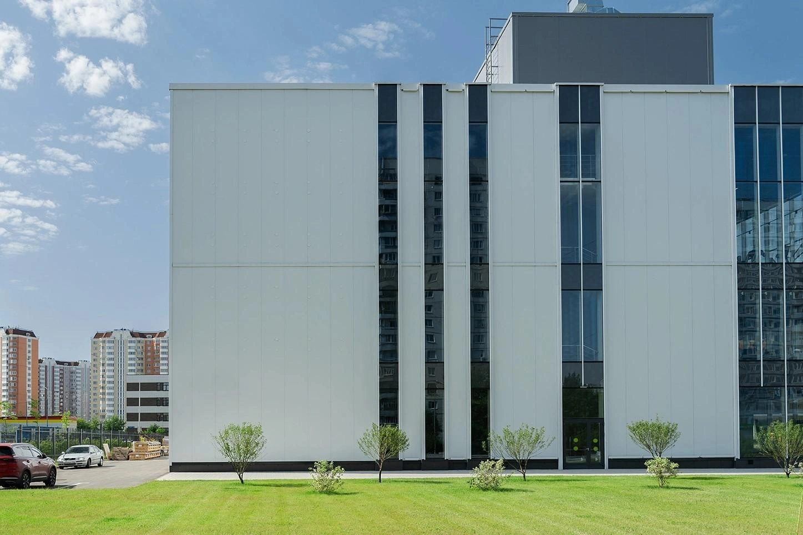
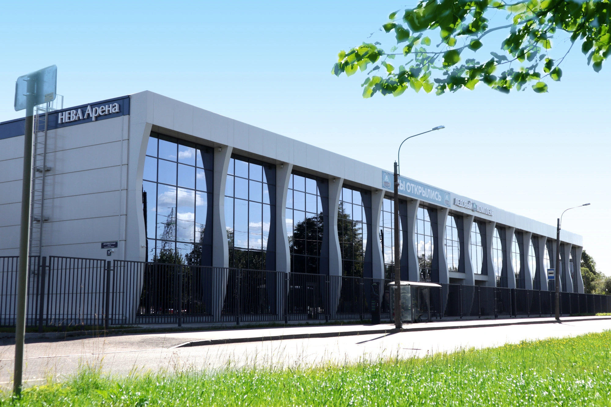
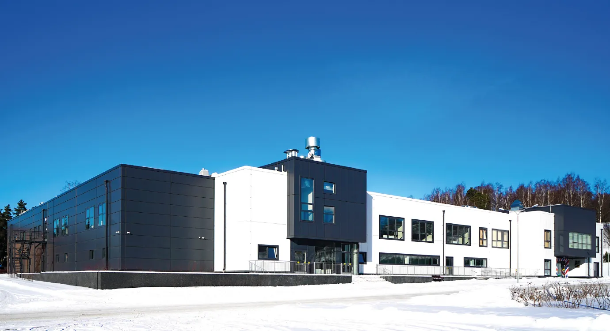
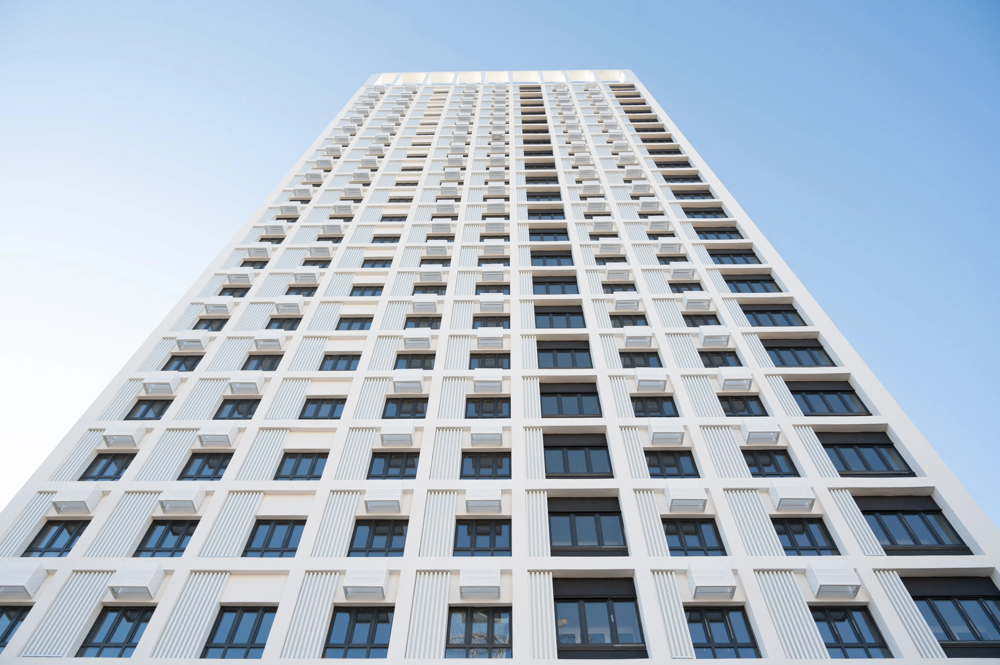
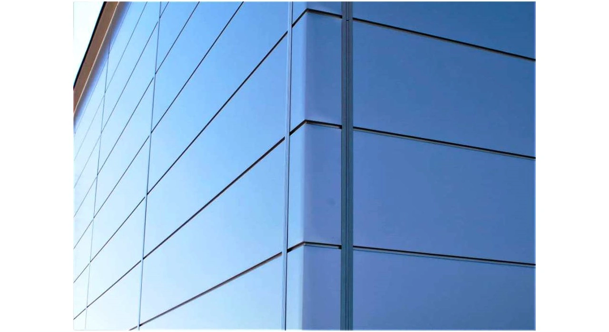
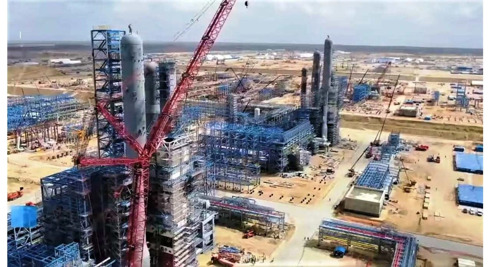
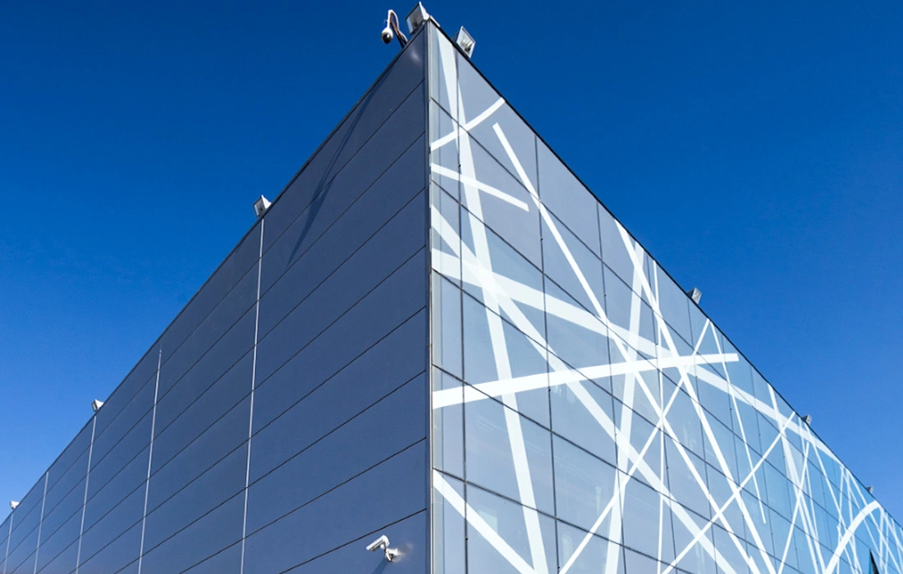

Какие фасадные системы подходят для нестандартных объектов
Сравниваем возможности модульных систем, стеновых панелей и архитектурной облицовки для зданий со сложной геометрией.

Статьи Frontside о фасадных системах и сэндвич-панелях. Разбираем выбор материалов, устройство фасадов и примеры реализованных проектов.
Сравниваем возможности модульных систем, стеновых панелей и архитектурной облицовки для зданий со сложной геометрией.

Разбираем, когда назначение, расположение и форма здания требуют индивидуального проектирования фасада.

Как мороз, осадки и ветер влияют на материалы фасада и выбор системы для разных регионов.

Как система UNIQUE помогла сформировать архитектурный образ спортивного комплекса в Санкт-Петербурге.

Какие требования учитывают при проектировании и испытаниях фасадов. Разбор рисков и выбора систем от специалиста Frontside.
Фотографии центра зимних видов спорта во Всеволожске с фасадом на системе FRONTTOP.

Как архитектурная облицовка ARTLINE помогла реализовать фасад жилого комплекса в Ульяновске.

Из чего складывается стоимость UNIQUE и чем производство модулей отличается от выпуска стандартных панелей.

Почему фасадное решение подбирают под конкретное здание: от покрытия и утеплителя до узлов крепления.

Разбираем преимущества модульного подхода для торговых, офисных и спортивных зданий.
